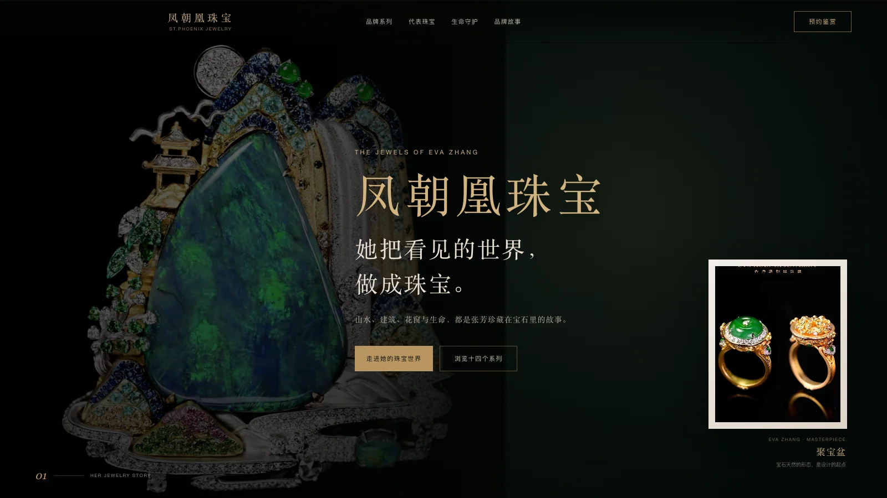
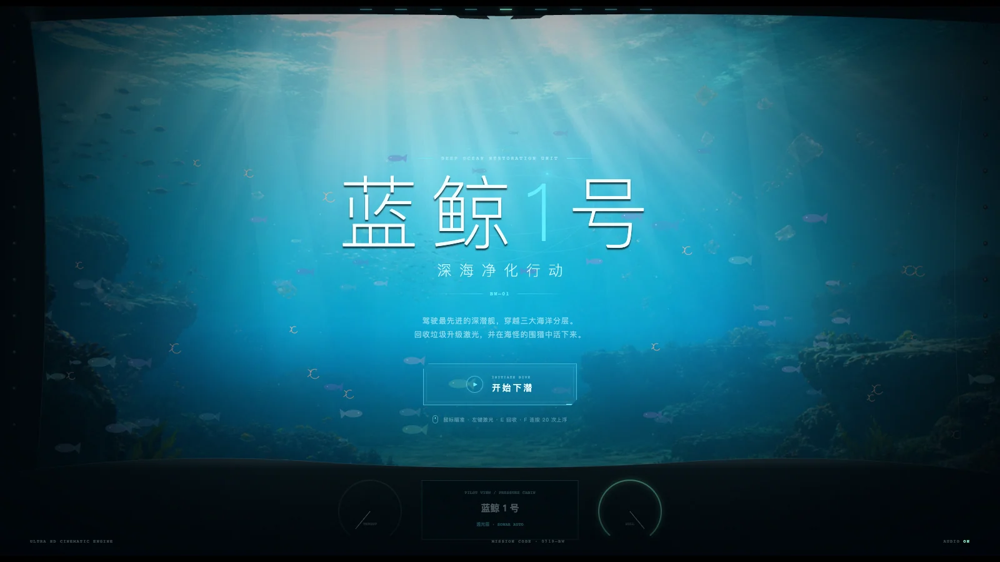
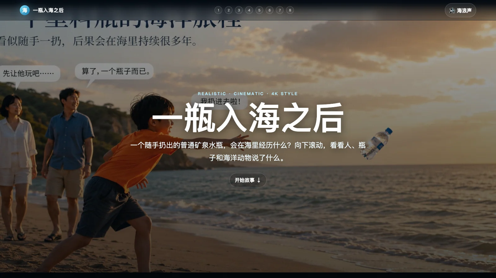

动物汽车收藏馆
把猎豹、鲨鱼、犀牛、孔雀等动物特征转化成 22 款概念汽车，并做成可筛选、可打开详情的线上收藏馆。
展示边界：AI 辅助概念展示，不是真实车型或品牌合作。
TODO AI FUTURE SCHOOL · 作品中心
这里集中呈现孩子参与选题、制作和表达的既有项目。不同作品解决的问题不同，也不代表每位孩子都会完成同一种项目或达到相同结果。
完整线上作品 · 按线上顺序呈现
这里与线上作品中心保持同一份 10 件作品清单。点击封面或“打开作品”即可查看原作；作者、类型、完成时间和展示边界分别标注。
把猎豹、鲨鱼、犀牛、孔雀等动物特征转化成 22 款概念汽车，并做成可筛选、可打开详情的线上收藏馆。
展示边界：AI 辅助概念展示，不是真实车型或品牌合作。

围绕喜欢的 HSV 球队，整理球员、比赛、文化、视频与球迷互动，做成一座内容丰富的非官方球迷站。
展示边界：非官方球迷学习项目，不代表 HSV 官方合作。

把 48 支战队的排名、赛区、公开阵容与比赛快照整理成可搜索、可筛选、可查看详情的 H5 网站。
展示边界：制作时点的公开资料整理，不代表官方实时数据。

把游戏角色、阵营、剧情与编辑资讯整理成可搜索、可浏览的资料门户，并尝试评分、收藏等产品概念。
展示边界：学习型资料门户原型，不代表游戏官方合作或完整权威数据库。

从“想保护海洋动物”出发，孩子把污染问题做成了一段可浏览、可分享的视觉旅程。
展示边界：原始画面与网页叙事共同构成作品，不代表固定课程产出。

把不同心情和场景的短句整理成可搜索、可分类、可收藏、可一键复制的小程序网页预览。
展示边界：可操作的学习项目原型，不代表商业上线产品。

让家长和孩子分别完成 12 道情景题，再把双方答案汇成一个可解释、可保存分享的相处模式结果。
展示边界：用于亲子交流体验，不构成心理测评或专业建议。

顶鼎为妈妈张芳制作的珠宝品牌网站，把凤朝凰品牌、生命守护系列与其他自然主题系列整理成一座可以在线浏览的珠宝展馆。
展示边界：学生围绕家人真实创作完成的品牌展示项目，以作品讲述为主，不是珠宝交易页面。

顶鼎把“为海洋环保做贡献”的想法做成一款网页游戏：驾驶深潜舱穿越三层海域，回收垃圾、升级装备并对抗海怪。
展示边界：学习型浏览器游戏；海洋场景、装备与任务机制属于创作表达，不代表真实海洋行动方案。

顶鼎用 8 幕滚动故事追踪一个塑料瓶入海后的旅程，希望大家看见它对海洋动物和食物链的影响，重新重视回收与环保行动。
展示边界：以唤起环保讨论为目的的视觉叙事项目，页面中的人物与情境属于创作性表达。